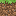
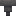
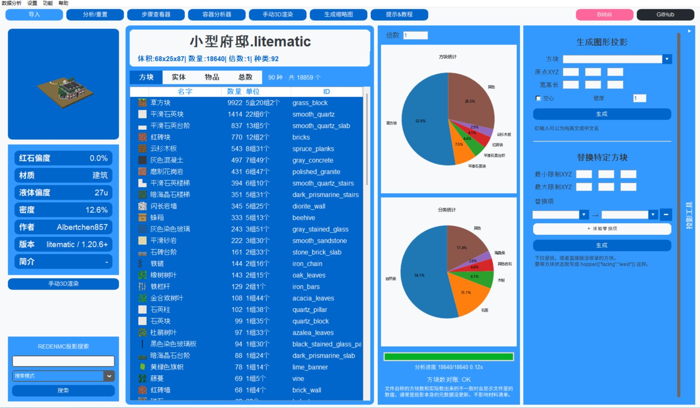

材料清单
方块 / 实体 / 物品 / 总数四个页签，右键可忽略或快捷替换某一行。
网页版分析正在路上。先把入口放在这里，到时候直接拖文件就能看材料清单。
导入投影，方块、实体、容器里的物品一次数清，按 盒 / 组 / 个 换算好，直接照着备料。
一座小型府邸，一共要……
0 个方块
92 种 · 草方块就要 5盒20组2个
.litematic
Litematica 模组投影，支持多子区域，可单独查看每个区域
.nbt
Java 版结构方块文件
.mcstructure
基岩版结构文件，方块名自动换成 Java 写法
→ 存档
导出成虚空世界，放进 saves 就能进游戏看

方块 / 实体 / 物品 / 总数四个页签，右键可忽略或快捷替换某一行。
左上角缩略图可拖拽旋转、滚轮缩放；需要细看就开网页 3D 渲染。
箱子、潜影盒、漏斗里装了什么，一格一格摆给你看。
逐层看方块的贴图、朝向和上下半，照着一层层盖。
七项指标看出它是建筑还是机器：红石偏度、液体、密度……

批量替换方块（可带属性），或者直接生成实心 / 空心的长方体投影。

第一次打开先选语言，之后在「帮助 → 语言」随时切换。